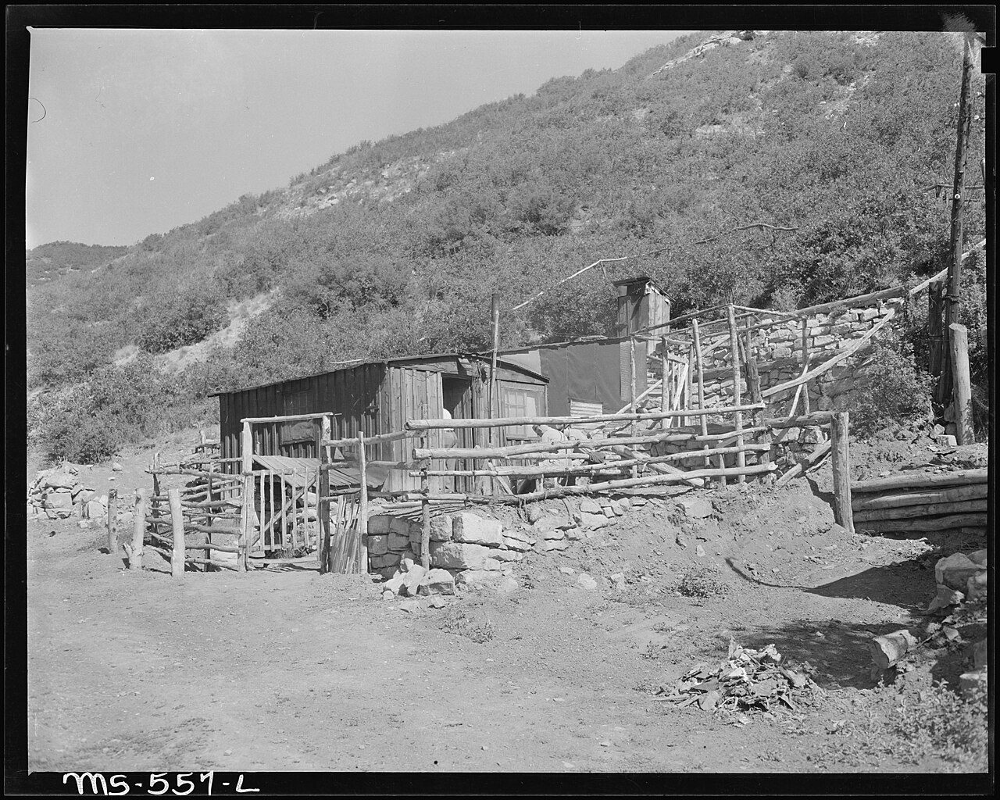

[한일수교 60년⑯] 무라야마는 떠났고, 유골을 찾던 사람들은 2026년에 감정 절차를 얻어 냈다
2025년 10월 17일 무라야마 도미이치 전 총리가 101세로 별세했다, 1995년 담화의 주인이다
1976년부터 홋카이도에서 유골을 찾던 일본 시민들의 작업이 50년에 접어들었다
2026년 5월 조세이 탄광 유골 DNA 감정 절차가 정해졌다, 정부가 아니라 축적이 만든 결과다
AI경세제민=김갑봉 기자 | 2025년 10월 17일 무라야마 도미이치 전 일본 총리가 101세로 별세했다. 1995년 식민지 지배와 침략에 대한 반성과 사죄를 담은 담화를 낸 사람이다. 그가 떠난 뒤 1년, 일본 정부에서는 새 담화가 나오지 않았고 일본 시민사회에서는 결과가 하나 나왔다.

※ 이 연재는 2025년 인천투데이에 실린 「한일수교 60년」 연재를 잇는다. 논지는 이어받되 수치와 사실은 2026년 10월 기준으로 다시 확인해 썼다.
세 담화와 그 뒤 16년
일본 정부의 공식 사죄 문서는 1993년 8월 4일 고노 담화, 1995년 8월 15일 무라야마 담화, 2010년 8월 10일 간 담화로 꼽힌다.
무라야마 담화는 일본이 전쟁 책임과 식민지 지배를 공식 인정한 첫 문서로 평가된다. 그 2년 뒤 1997년 일본회의가 세워졌다. 2012년 아베 내각에서 교과서의 위안부 서술이 빠졌다.
마지막 담화가 2010년이다. 2026년까지 16년 동안 새 담화는 없었다.
1976년부터 유골을 찾은 사람들
가. 홋카이도
홋카이도에서 1976년부터 강제동원 피해자의 유골을 찾는 작업이 이어졌다. 도노히라 요시히코 스님와 관련 단체가 중심이었다. 2026년으로 50년에 접어들었다.
1997년부터 한일 청년 공동 워크숍이 열렸고 2001년에는 동아시아로 넓혔다. 한 비행장 터에서는 2006년부터 2010년까지 수십 구가 수습됐다.
나. 축적의 결과
2026년 5월 19일 안동 한일 정상회담에서 조세이 탄광 유골의 DNA 감정을 곧 시작하기로 합의했다. 외교 실무 협의에서 절차와 방법을 정했다. 이재명 대통령은 인도적 과거사 문제의 작지만 의미 있는 첫걸음이라고 했다.
이 합의가 가능했던 까닭은 감정할 유골과 감정을 요구하는 기록이 있었기 때문이다. 50년에 걸친 민간 작업이 그 둘을 만들었다.
정부 간 합의는 축적된 자료 위에서만 가능하다. 2026년의 한 걸음이 그것을 보여 준다.
조선학교와 화요행동
조선학교는 2010년 일본의 고교 수업료 무상화에서 제외됐고 2013년 2월 20일 문부과학성 성령으로 공식 제외됐다.
일본 시민 단체가 그때부터 항의를 이어 왔다. 오사카의 화요행동은 2025년 1월 14일 600회를 맞았다. 2024년 11월에는 약 6만명의 서명이 문부과학성에 제출됐다.
600회는 12년에 걸친 숫자다. 결과는 아직 없다. 그러나 조선학교 문제가 일본 안에서 계속 제기되고 있다는 기록은 남는다.
야스쿠니 앞에서
8월 15일 야스쿠니 신사 앞에 반대하는 일본 시민들이 모인다. 총리의 참배에 항의해 왔다.
2026년의 기록은 이렇다. 다카이치 사나에 총리는 2025년 10월 총재가 된 뒤 추계 대제에 참배하지 않았고 총리가 된 뒤 춘계 대제에도 참배하지 않았다. 2026년 8월 15일에는 사비로 다마구시를 봉납하고 멀리서 참배했다. 2026년 10월 17일 추계 대제에는 '내각총리대신 다카이치 사나에' 이름으로 마사카키를 봉납하고 참배하지 않았다.
같은 2026년 8월 15일 고이즈미 신지로 방위상이 직접 참배했고 자민당 간부들이 단체로 참배했다.
총리의 보류를 시민사회의 성과로만 읽을 수는 없다. 외교 비용 계산이 먼저였을 것이다. 다만 참배에 비용이 붙게 만든 것은 수십 년의 항의다.
수요시위와 금요행동
서울의 수요시위는 1992년 1월 8일 시작해 33년을 넘겼다. 일본 시민 단체도 참여한다. 주일 한국대사관 앞 금요행동은 500회를 넘었다.
국제 결의도 쌓였다. 2007년 미국 하원과 유럽의회, 네덜란드와 캐나다, 대만, 그리고 한국 국회의 결의가 2007년부터 2008년 사이에 나왔다.
2026년 3월 등록 피해자 240명 가운데 235명이 별세해 생존자는 5명이다. 평균 연령 95.8세, 최고령은 1928년생 97세다.
당사자가 사라져도 결의와 기록은 남는다. 남은 기록을 관리하는 일이 다음 세대의 과제가 된다.
2026년 일본 정치와 시민사회의 거리
2026년 2월 8일 총선에서 자민당이 316석을 얻었다. 참정당은 3석에서 15석으로 늘었다. 과거사를 직시하는 쪽의 의석은 늘지 않았다.
의회의 구성과 시민사회의 축적이 반대 방향으로 간다. 이것이 2026년 일본의 특징이다.
같은 나라 안에서 50년 유골 발굴과 316석이 공존한다. 둘 중 하나로 일본을 설명하면 틀린다.
한국이 할 일
가. 상대를 둘로 볼 것
일본 정부와 일본 시민사회를 하나로 묶어 다루면 협상도 연대도 안 된다. 정부와는 문서로 거래하고 시민사회와는 기록으로 협력하는 두 경로가 필요하다.
나. 기록을 지원할 것
조세이 탄광 감정이 가능했던 것은 기록이 있었기 때문이다. 홋카이도 발굴, 조선학교 자료, 재일동포 공동체의 기록을 체계적으로 수집하고 보존하는 일은 한국 쪽에서 예산을 붙일 수 있는 사업이다.
다. 담화를 요구하는 방식을 바꿀 것
16년 동안 새 담화가 없었다. 담화를 요구하는 것보다 담화의 내용을 조약 수준으로 올려 국회 비준을 받는 쪽이 실효가 있다. 1998년 김대중-오부치 공동선언을 그 형태로 만들라는 제안이 선행 연재에 있었다. 2026년 10월 기준으로 그런 움직임은 확인하지 못했다.
무라야마 이후
무라야마는 1995년에 담화를 냈고 2025년에 세상을 떠났다. 그 30년 사이에 일본회의가 커지고 교과서가 바뀌고 극우 정당이 의회에 들어왔다.
그럼에도 1976년에 시작한 유골 발굴은 2026년까지 이어졌고 그 작업에서 정부 간 합의 하나가 나왔다.
용서는 피해자의 권리이고 기억은 모두의 의무다. 2026년에 남은 다섯 분이 떠난 뒤에도 할 수 있는 일은 기억을 관리하는 것이다. 그 관리의 가장 믿을 만한 축이 지금까지는 양국 시민사회였다.
참고문헌
무라야마 담화, 1995년 8월 15일. 고노 담화, 1993년 8월 4일. 간 담화, 2010년 8월 10일
여성가족부, 일본군 위안부 피해자 등록 및 생존 현황, 2026년 3월
대한민국 대통령실, 한일 정상회담 결과 발표, 2026년 5월 19일
경향신문, 다카이치 야스쿠니 공물 봉납 보도, 2026년 10월 17일
인천투데이, 「한일수교 60년 ⑯」, 2025년 10월
사진 출처
· [대표사진] Russell Lee, "Home of Japanese miner who lives in company housing project. Hudson Coal Company, Hudson Mine, Sweet Mine, Carbon... - NARA - 540486.jpg", 위키미디어 공용, 퍼블릭 도메인, https://commons.wikimedia.org/wiki/File:Home_of_Japanese_miner_who_lives_in_company_housing_project._Hudson_Coal_Company,_Hudson_Mine,_Sweet_Mine,_Carbon..._-_NARA_-_540486.jpg
※ 이 기사는 AI 프로그램 클로드를 활용해 작성했습니다.
관련기사
- [한일수교 60년⑰] 다카이치 1년, 중국은 '총리' 호칭마저 뗐고 한국만 남았다
- [한일수교 60년⑮] 연립 상대는 공명당에서 유신회로 바뀌고, 상징은 1년 넘게 보류됐다
- [한일수교 60년⑱] 30년 멈춘 일본 임금이 8개월 올랐다, 그래도 한국보다 낮다
- [한일수교 60년⑭] 1년 전 포럼에서 들은 불안, 2026년에 거의 다 현실이 됐다
저작권자 © AI경세제민 무단전재 및 재배포, AI학습 및 활용 금지